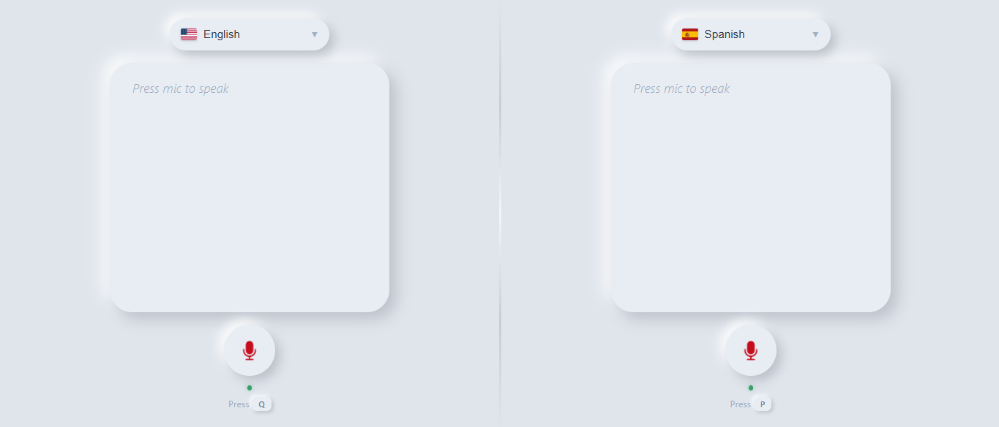

COR to Timetable & Lockscreen Wallpaper
Turn your USTP COR pdf into a timetable, a lockscreen wallpaper, or an ics file.
Problem:
Reading your schedule from your raw USTP COR is inefficient.
Solution:
Just be lazy, and use this project that I developed.
HTML
CSS
JavaScript

Michi (Language Translator)
Remember Benji Bananas? The game where one side is upside down so two players can play together? We did the same thing with a language translator. Best to use on mobile.
Problem:
In other translators, we kept clicking the switch button and passing phones back and forth to let each person read the translation.
Solution:
Just use this for smooth, face-to-face conversation.
HTML
CSS
JavaScript